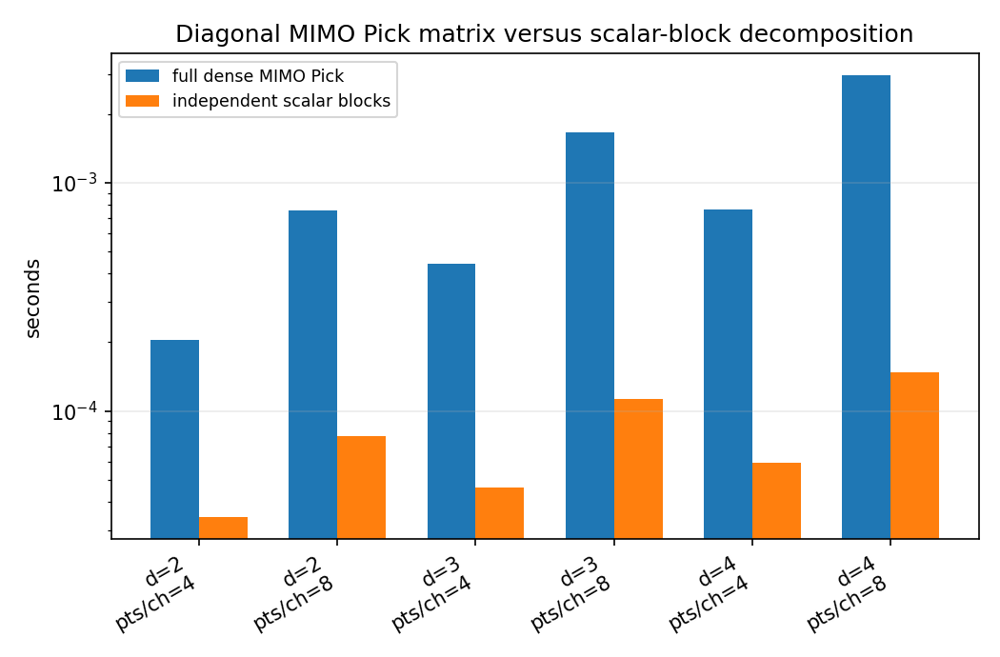
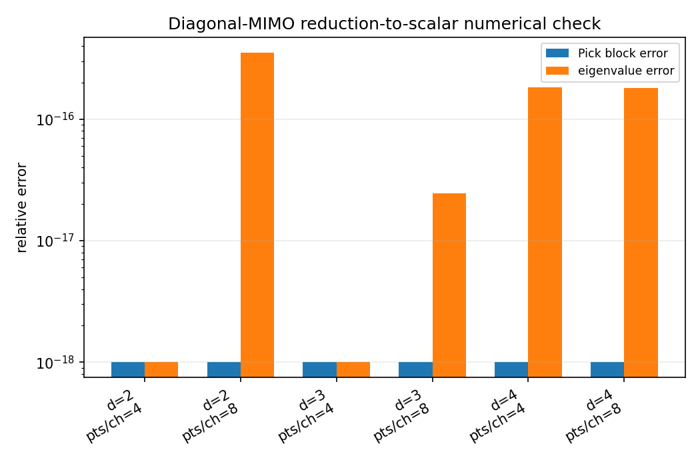
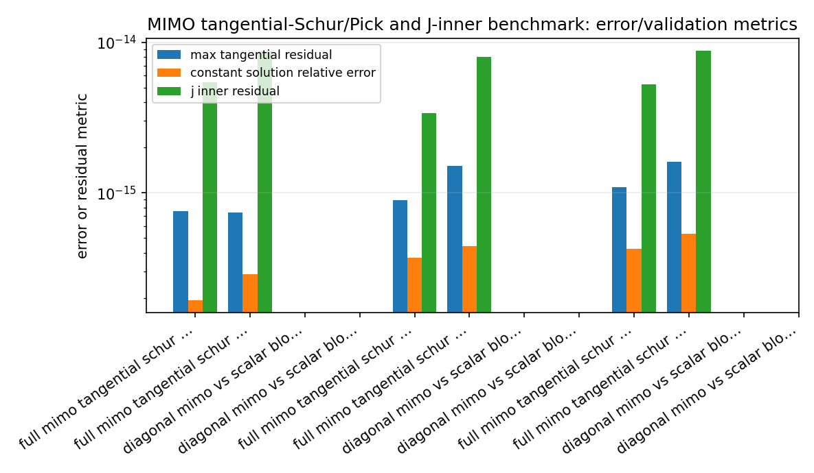
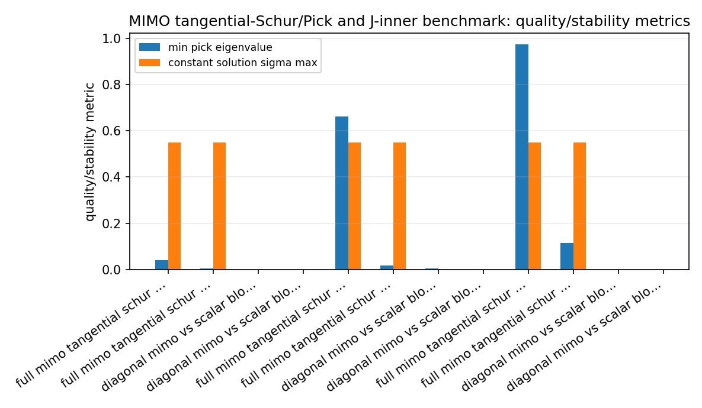
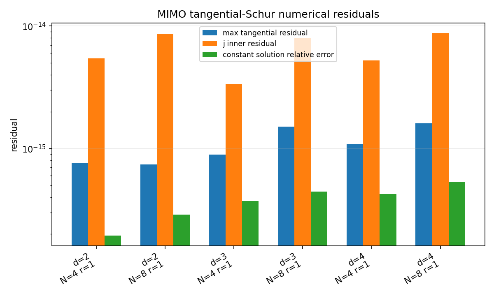
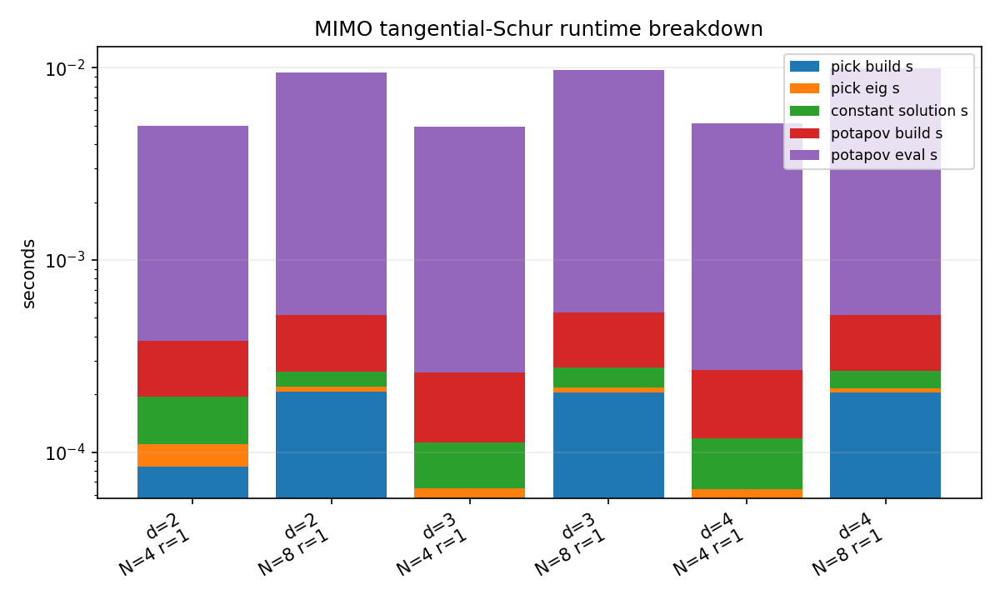
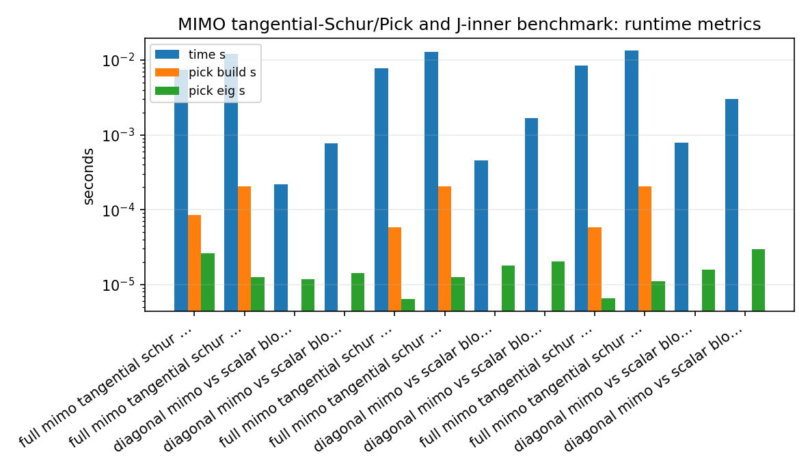
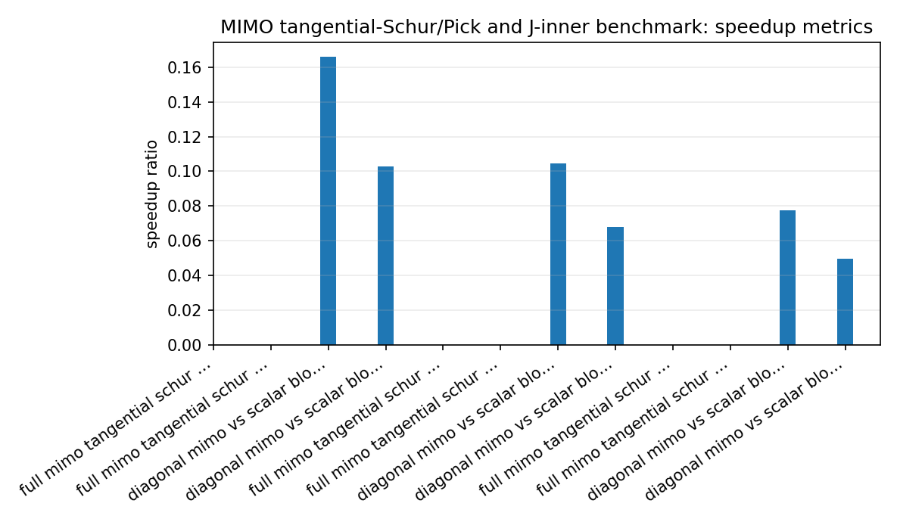

MIMO tangential-Schur/Pick and J-inner benchmark¶
Tutorial goal
Measure finite MIMO tangential Pick, constant Schur recovery, and Potapov/J-inner diagnostic costs.
Note
New to the terminology? See the lattice DSP concept map and the causality/data-use guide for how online, offline, block, and MIMO examples should be read.
Context¶
The tangential-Schur layer is a mathematical bridge between MIMO interpolation, J-inner/lossless systems, and the matrix-lattice examples. This benchmark measures the finite definite baseline: constructing the right-tangential Pick matrix, checking its Hermitian spectrum, recovering a compatible constant Schur matrix, and evaluating elementary Potapov J-inner products on a boundary grid.
The benchmark also includes a diagonal-MIMO sanity case. When tangential directions are coordinate vectors and the Schur map is diagonal, the full MIMO Pick matrix decomposes into independent scalar Pick blocks. The benchmark reports both numerical block/eigenvalue agreement and the cost difference between treating the problem as dense MIMO data versus scalar subproblems.
Key idea and equations¶
For right tangential data
the Pick blocks are
A finite definite Schur-class certificate requires \(P \succeq 0\). The J-inner diagnostic checks elementary Potapov products on the unit circle:
In the diagonal case, coordinate directions should make the dense MIMO Pick matrix equal a block diagonal assembly of scalar Pick matrices.
How to read the result¶
Use the runtime-breakdown figure to see where cost goes, the residual figure to check interpolation and J-inner accuracy, and the diagonal comparison to verify reduction to independent scalar Schur problems.
Run command¶
python benchmarks/tangential_schur_mimo_benchmark.py --dims 2 3 4 --points 4 8 --diagonal-points-per-channel 4 8 --boundary-grid 256 --repeats 2 --output docs/benchmarks/generated/_artifacts/tangential_schur_mimo/tangential-schur-mimo.json --csv-output docs/benchmarks/generated/_artifacts/tangential_schur_mimo/tangential-schur-mimo.csv
Run status¶
Return code: 0
Visual and data readout¶
When the benchmark gallery is built with results, this page embeds PNG summaries generated from the same JSON/CSV artifacts. The raw data stay available below as downloads so exact numbers remain reproducible without making the public page read like console output.
Figures¶
{kind=link}

tangential_schur_diagonal_mimo_vs_scalar_blocks.png¶
{kind=link}

tangential_schur_diagonal_scalar_block_errors.png¶
{kind=link}

tangential_schur_mimo_error_summary.png¶
{kind=link}

tangential_schur_mimo_quality_summary.png¶
{kind=link}

tangential_schur_mimo_residuals.png¶
{kind=link}

tangential_schur_mimo_runtime_breakdown.png¶
{kind=link}

tangential_schur_mimo_runtime_summary.png¶
{kind=link}

tangential_schur_mimo_speedup_summary.png¶
Generated data files¶
Source code¶
1"""Benchmark finite MIMO tangential-Schur/Pick and J-inner diagnostics.
2
3The benchmark focuses on the pure Python/NumPy tangential-Schur layer that
4connects MIMO interpolation data with Pick certificates and J-inner Potapov
5factors. It measures three public operations:
6
7* building and diagonalizing the right-tangential Pick matrix;
8* recovering a compatible constant Schur matrix and checking interpolation;
9* building/evaluating elementary J-inner Potapov products on the unit circle.
10
11A separate diagonal sanity block compares a full diagonal-MIMO Pick matrix with
12independent scalar Pick blocks. That comparison is a benchmark counterpart to
13the diagonal-MIMO-equals-SISO examples: the full matrix formulation should agree
14numerically with the independent scalar decomposition while exposing the extra
15cost of treating a diagonal problem as dense MIMO data.
16"""
17
18from __future__ import annotations
19
20import argparse
21import csv
22import importlib.util
23import json
24import math
25import platform
26import statistics
27import sys
28import time
29from pathlib import Path
30from types import SimpleNamespace
31from collections.abc import Callable
32
33import numpy as np
34
35
36def _load_lattice_api():
37 """Import public lattice_dsp API, with a source-tree fallback for docs smoke runs.
38
39 A source checkout without the compiled extension cannot import the top-level
40 package because ``lattice_dsp._core`` is missing. The tangential-Schur module
41 itself is pure Python, so benchmark/docs generation can still run the finite
42 Pick/J-inner diagnostics directly from ``lattice_dsp/tangential_schur.py``.
43 Installed wheels use the public top-level API.
44 """
45
46 def from_source_tree():
47 repo_root = Path(__file__).resolve().parents[1]
48 module_path = repo_root / "lattice_dsp" / "tangential_schur.py"
49 spec = importlib.util.spec_from_file_location("_lattice_dsp_tangential_schur_bench", module_path)
50 if spec is None or spec.loader is None:
51 raise ModuleNotFoundError("could not load lattice_dsp/tangential_schur.py")
52 module = importlib.util.module_from_spec(spec)
53 sys.modules[spec.name] = module
54 spec.loader.exec_module(module)
55 return SimpleNamespace(
56 RightTangentialSchurData=module.RightTangentialSchurData,
57 right_tangential_pick_matrix=module.right_tangential_pick_matrix,
58 pick_matrix_eigenvalues=module.pick_matrix_eigenvalues,
59 is_tangential_schur_solvable=module.is_tangential_schur_solvable,
60 constant_schur_solution=module.constant_schur_solution,
61 max_tangential_residual=module.max_tangential_residual,
62 potapov_product_from_rank_one_data=module.potapov_product_from_rank_one_data,
63 j_unitarity_residual=module.j_unitarity_residual,
64 )
65
66 try:
67 import lattice_dsp as ld # type: ignore
68 except ModuleNotFoundError as exc:
69 if exc.name != "lattice_dsp._core":
70 raise
71 return from_source_tree()
72 # During local docs generation another older lattice_dsp build may be
73 # importable on sys.path. Use the source-tree implementation when the
74 # newly added tangential API is absent.
75 if not hasattr(ld, "RightTangentialSchurData"):
76 return from_source_tree()
77 return ld
78
79
80ld = _load_lattice_api()
81
82
83def median_time(fn: Callable[[], object], repeats: int) -> tuple[float, object]:
84 values: list[float] = []
85 result: object = None
86 for _ in range(repeats):
87 t0 = time.perf_counter()
88 result = fn()
89 values.append(time.perf_counter() - t0)
90 return statistics.median(values), result
91
92
93def random_points(rng: np.random.Generator, n_points: int, radius: float) -> np.ndarray:
94 angles = rng.uniform(0.0, 2.0 * np.pi, size=n_points)
95 # Spread points in the disk but keep them away from the boundary by default.
96 radii = radius * np.sqrt(rng.uniform(0.05, 1.0, size=n_points))
97 return radii * np.exp(1j * angles)
98
99
100def constant_contraction(rng: np.random.Generator, dim: int, scale: float) -> np.ndarray:
101 raw = rng.normal(size=(dim, dim)) + 1j * rng.normal(size=(dim, dim))
102 sigma_max = np.linalg.svd(raw, compute_uv=False)[0]
103 return scale * raw / sigma_max
104
105
106def full_mimo_data(dim: int, n_points: int, multiplicity: int, *, seed: int, radius: float, scale: float):
107 rng = np.random.default_rng(seed)
108 s0 = constant_contraction(rng, dim, scale)
109 points = random_points(rng, n_points, radius)
110 directions = rng.normal(size=(n_points, dim, multiplicity)) + 1j * rng.normal(
111 size=(n_points, dim, multiplicity)
112 )
113 values = np.einsum("oi,nir->nor", s0, directions)
114 data = ld.RightTangentialSchurData(points, directions, values)
115 return data, s0
116
117
118def run_full_mimo_case(
119 *,
120 dim: int,
121 n_points: int,
122 multiplicity: int,
123 repeats: int,
124 boundary_grid: int,
125 seed: int,
126 radius: float,
127 scale: float,
128) -> dict[str, object]:
129 data, s0 = full_mimo_data(
130 dim,
131 n_points,
132 multiplicity,
133 seed=seed,
134 radius=radius,
135 scale=scale,
136 )
137
138 pick_build_s, pick = median_time(lambda: ld.right_tangential_pick_matrix(data), repeats)
139 pick_eig_s, eig = median_time(lambda: ld.pick_matrix_eigenvalues(pick), repeats)
140 psd_check_s, solvable = median_time(lambda: ld.is_tangential_schur_solvable(data), repeats)
141 constant_solution_s, recovered = median_time(lambda: ld.constant_schur_solution(data), repeats)
142 residual = float(ld.max_tangential_residual(data, recovered))
143 constant_error = float(np.linalg.norm(recovered - s0) / max(1.0, np.linalg.norm(s0)))
144 sigma = float(np.linalg.svd(recovered, compute_uv=False)[0])
145
146 potapov_build_s, product = median_time(lambda: ld.potapov_product_from_rank_one_data(data), repeats)
147 omega = np.linspace(0.0, 2.0 * np.pi, boundary_grid, endpoint=False)
148 z_grid = np.exp(1j * omega)
149 potapov_eval_s, theta = median_time(lambda: product.evaluate(z_grid), repeats)
150 j_check_s, j_residuals = median_time(lambda: ld.j_unitarity_residual(theta, product.j), repeats)
151 max_j = float(np.max(j_residuals))
152
153 total_conditions = int(data.total_conditions)
154 total_time_s = float(
155 pick_build_s + pick_eig_s + psd_check_s + constant_solution_s + potapov_build_s + potapov_eval_s + j_check_s
156 )
157 return {
158 "case": "full_mimo_tangential_schur",
159 "dim": dim,
160 "points": n_points,
161 "multiplicity": multiplicity,
162 "total_conditions": total_conditions,
163 "pick_size": int(pick.shape[0]),
164 "j_dimension": int(product.dimension),
165 "boundary_grid": boundary_grid,
166 "pick_build_s": float(pick_build_s),
167 "pick_eig_s": float(pick_eig_s),
168 "psd_check_s": float(psd_check_s),
169 "constant_solution_s": float(constant_solution_s),
170 "potapov_build_s": float(potapov_build_s),
171 "potapov_eval_s": float(potapov_eval_s),
172 "j_check_s": float(j_check_s),
173 "time_s": total_time_s,
174 "min_pick_eigenvalue": float(np.min(eig)),
175 "max_pick_eigenvalue": float(np.max(eig)),
176 "solvable": bool(solvable),
177 "constant_solution_sigma_max": sigma,
178 "max_tangential_residual": residual,
179 "constant_solution_relative_error": constant_error,
180 "j_inner_residual": max_j,
181 }
182
183
184def diagonal_mimo_coordinate_data(dim: int, points_per_channel: int, *, seed: int, radius: float, scale: float):
185 rng = np.random.default_rng(seed)
186 gains = scale * np.exp(1j * rng.uniform(0.0, 2.0 * np.pi, size=dim))
187 points_blocks = [random_points(rng, points_per_channel, radius) for _ in range(dim)]
188 points = np.concatenate(points_blocks)
189 directions = np.zeros((dim * points_per_channel, dim), dtype=np.complex128)
190 values = np.zeros_like(directions)
191 for ch in range(dim):
192 start = ch * points_per_channel
193 stop = start + points_per_channel
194 directions[start:stop, ch] = 1.0
195 values[start:stop, ch] = gains[ch]
196 data = ld.RightTangentialSchurData(points, directions, values)
197 return data, points_blocks, gains
198
199
200def scalar_pick_matrix(points: np.ndarray, gain: complex) -> np.ndarray:
201 z = np.asarray(points, dtype=np.complex128)
202 pick = np.empty((z.size, z.size), dtype=np.complex128)
203 for i, zi in enumerate(z):
204 for j, zj in enumerate(z):
205 pick[i, j] = (1.0 - np.conj(gain) * gain) / (1.0 - np.conj(zi) * zj)
206 return 0.5 * (pick + pick.conj().T)
207
208
209def block_diag(mats: list[np.ndarray]) -> np.ndarray:
210 size = sum(mat.shape[0] for mat in mats)
211 out = np.zeros((size, size), dtype=np.complex128)
212 offset = 0
213 for mat in mats:
214 n = mat.shape[0]
215 out[offset : offset + n, offset : offset + n] = mat
216 offset += n
217 return out
218
219
220def run_diagonal_scalar_block_case(
221 *,
222 dim: int,
223 points_per_channel: int,
224 repeats: int,
225 seed: int,
226 radius: float,
227 scale: float,
228) -> dict[str, object]:
229 data, point_blocks, gains = diagonal_mimo_coordinate_data(
230 dim,
231 points_per_channel,
232 seed=seed,
233 radius=radius,
234 scale=scale,
235 )
236
237 full_pick_s, full_pick = median_time(lambda: ld.right_tangential_pick_matrix(data), repeats)
238 full_eig_s, full_eig = median_time(lambda: ld.pick_matrix_eigenvalues(full_pick), repeats)
239
240 def scalar_blocks():
241 blocks = [scalar_pick_matrix(points, gains[ch]) for ch, points in enumerate(point_blocks)]
242 eig = np.concatenate([np.linalg.eigvalsh(block) for block in blocks])
243 return blocks, eig
244
245 scalar_blocks_s, (blocks, scalar_eig) = median_time(scalar_blocks, repeats)
246 expected = block_diag(blocks)
247 block_error = float(np.linalg.norm(full_pick - expected) / max(1.0, np.linalg.norm(expected)))
248 eig_error = float(
249 np.linalg.norm(np.sort(full_eig) - np.sort(scalar_eig)) / max(1.0, np.linalg.norm(np.sort(scalar_eig)))
250 )
251 speedup = scalar_blocks_s / full_pick_s if full_pick_s > 0.0 else float("inf")
252 return {
253 "case": "diagonal_mimo_vs_scalar_blocks",
254 "dim": dim,
255 "points": int(dim * points_per_channel),
256 "points_per_channel": points_per_channel,
257 "multiplicity": 1,
258 "total_conditions": int(data.total_conditions),
259 "pick_size": int(full_pick.shape[0]),
260 "full_mimo_pick_s": float(full_pick_s),
261 "scalar_blocks_pick_s": float(scalar_blocks_s),
262 "pick_eig_s": float(full_eig_s),
263 "time_s": float(full_pick_s + full_eig_s),
264 "scalar_block_time_s": float(scalar_blocks_s),
265 "speedup_scalar_blocks_vs_full_mimo": float(speedup),
266 "min_pick_eigenvalue": float(np.min(full_eig)),
267 "diagonal_block_relative_error": block_error,
268 "diagonal_block_eigenvalue_relative_error": eig_error,
269 }
270
271
272def write_csv(rows: list[dict[str, object]], path: Path) -> None:
273 keys: list[str] = []
274 for row in rows:
275 for key in row:
276 if key not in keys:
277 keys.append(key)
278 path.parent.mkdir(parents=True, exist_ok=True)
279 with path.open("w", newline="", encoding="utf-8") as f:
280 writer = csv.DictWriter(f, fieldnames=keys)
281 writer.writeheader()
282 for row in rows:
283 writer.writerow(row)
284
285
286def finite_or_nan(value: object) -> float:
287 try:
288 x = float(value)
289 except (TypeError, ValueError):
290 return float("nan")
291 return x if math.isfinite(x) else float("nan")
292
293
294def plot_benchmark(rows: list[dict[str, object]], artifact_dir: Path) -> list[Path]:
295 try:
296 import matplotlib.pyplot as plt
297 import numpy as np
298 except Exception:
299 return []
300
301 written: list[Path] = []
302 artifact_dir.mkdir(parents=True, exist_ok=True)
303
304 full_rows = [row for row in rows if row.get("case") == "full_mimo_tangential_schur"]
305 if full_rows:
306 labels = [f"d={r['dim']}\nN={r['points']} r={r['multiplicity']}" for r in full_rows]
307 x = np.arange(len(full_rows))
308 timing_keys = ["pick_build_s", "pick_eig_s", "constant_solution_s", "potapov_build_s", "potapov_eval_s"]
309 fig, ax = plt.subplots(figsize=(max(8.0, 0.65 * len(full_rows) + 3.0), 4.8))
310 bottom = np.zeros(len(full_rows))
311 for key in timing_keys:
312 values = np.array([finite_or_nan(row.get(key)) for row in full_rows], dtype=float)
313 values = np.nan_to_num(values, nan=0.0)
314 ax.bar(x, values, bottom=bottom, label=key.replace("_", " "))
315 bottom += values
316 ax.set_title("MIMO tangential-Schur runtime breakdown")
317 ax.set_ylabel("seconds")
318 ax.set_xticks(x)
319 ax.set_xticklabels(labels, rotation=30, ha="right")
320 ax.set_yscale("log")
321 ax.grid(axis="y", alpha=0.25)
322 ax.legend(fontsize="small")
323 fig.tight_layout()
324 out = artifact_dir / "tangential_schur_mimo_runtime_breakdown.png"
325 fig.savefig(out, dpi=150)
326 plt.close(fig)
327 written.append(out)
328
329 fig, ax = plt.subplots(figsize=(max(8.0, 0.65 * len(full_rows) + 3.0), 4.8))
330 metrics = ["max_tangential_residual", "j_inner_residual", "constant_solution_relative_error"]
331 width = 0.24
332 for idx, key in enumerate(metrics):
333 values = np.array([finite_or_nan(row.get(key)) for row in full_rows], dtype=float)
334 ax.bar(x + (idx - 1) * width, values, width=width, label=key.replace("_", " "))
335 ax.set_title("MIMO tangential-Schur numerical residuals")
336 ax.set_ylabel("residual")
337 ax.set_xticks(x)
338 ax.set_xticklabels(labels, rotation=30, ha="right")
339 ax.set_yscale("log")
340 ax.grid(axis="y", alpha=0.25)
341 ax.legend(fontsize="small")
342 fig.tight_layout()
343 out = artifact_dir / "tangential_schur_mimo_residuals.png"
344 fig.savefig(out, dpi=150)
345 plt.close(fig)
346 written.append(out)
347
348 diag_rows = [row for row in rows if row.get("case") == "diagonal_mimo_vs_scalar_blocks"]
349 if diag_rows:
350 labels = [f"d={r['dim']}\npts/ch={r['points_per_channel']}" for r in diag_rows]
351 x = np.arange(len(diag_rows))
352 full = np.array([finite_or_nan(row.get("full_mimo_pick_s")) for row in diag_rows], dtype=float)
353 scalar = np.array([finite_or_nan(row.get("scalar_blocks_pick_s")) for row in diag_rows], dtype=float)
354 width = 0.35
355 fig, ax = plt.subplots(figsize=(max(7.0, 0.65 * len(diag_rows) + 3.0), 4.6))
356 ax.bar(x - width / 2, full, width=width, label="full dense MIMO Pick")
357 ax.bar(x + width / 2, scalar, width=width, label="independent scalar blocks")
358 ax.set_title("Diagonal MIMO Pick matrix versus scalar-block decomposition")
359 ax.set_ylabel("seconds")
360 ax.set_xticks(x)
361 ax.set_xticklabels(labels, rotation=30, ha="right")
362 ax.set_yscale("log")
363 ax.grid(axis="y", alpha=0.25)
364 ax.legend(fontsize="small")
365 fig.tight_layout()
366 out = artifact_dir / "tangential_schur_diagonal_mimo_vs_scalar_blocks.png"
367 fig.savefig(out, dpi=150)
368 plt.close(fig)
369 written.append(out)
370
371 fig, ax = plt.subplots(figsize=(max(7.0, 0.65 * len(diag_rows) + 3.0), 4.6))
372 errors = np.array([finite_or_nan(row.get("diagonal_block_relative_error")) for row in diag_rows], dtype=float)
373 eig_errors = np.array([finite_or_nan(row.get("diagonal_block_eigenvalue_relative_error")) for row in diag_rows], dtype=float)
374 # Exact zeros are possible in the diagonal sanity check. Plot a tiny
375 # floor so the log-scale figure remains visible without changing the
376 # downloadable numeric data.
377 errors_plot = np.maximum(np.nan_to_num(errors, nan=0.0), 1e-18)
378 eig_errors_plot = np.maximum(np.nan_to_num(eig_errors, nan=0.0), 1e-18)
379 ax.bar(x - width / 2, errors_plot, width=width, label="Pick block error")
380 ax.bar(x + width / 2, eig_errors_plot, width=width, label="eigenvalue error")
381 ax.set_title("Diagonal-MIMO reduction-to-scalar numerical check")
382 ax.set_ylabel("relative error")
383 ax.set_xticks(x)
384 ax.set_xticklabels(labels, rotation=30, ha="right")
385 ax.set_yscale("log")
386 ax.grid(axis="y", alpha=0.25)
387 ax.legend(fontsize="small")
388 fig.tight_layout()
389 out = artifact_dir / "tangential_schur_diagonal_scalar_block_errors.png"
390 fig.savefig(out, dpi=150)
391 plt.close(fig)
392 written.append(out)
393
394 return written
395
396
397def parse_args() -> argparse.Namespace:
398 parser = argparse.ArgumentParser(description=__doc__)
399 parser.add_argument("--dims", type=int, nargs="+", default=[2, 3, 4])
400 parser.add_argument("--points", type=int, nargs="+", default=[4, 8])
401 parser.add_argument("--multiplicity", type=int, default=1)
402 parser.add_argument("--diagonal-points-per-channel", type=int, nargs="+", default=[4, 8])
403 parser.add_argument("--boundary-grid", type=int, default=256)
404 parser.add_argument("--repeats", type=int, default=3)
405 parser.add_argument("--radius", type=float, default=0.65)
406 parser.add_argument("--scale", type=float, default=0.55)
407 parser.add_argument("--seed", type=int, default=1901)
408 parser.add_argument("--output", type=Path, default=Path("reports/tangential-schur-mimo.json"))
409 parser.add_argument("--csv-output", type=Path, default=Path("reports/tangential-schur-mimo.csv"))
410 parser.add_argument("--no-plots", action="store_true")
411 return parser.parse_args()
412
413
414def main() -> None:
415 args = parse_args()
416 if any(dim <= 0 for dim in args.dims):
417 raise SystemExit("--dims must contain positive integers")
418 if any(n <= 0 for n in args.points):
419 raise SystemExit("--points must contain positive integers")
420 if args.multiplicity <= 0:
421 raise SystemExit("--multiplicity must be positive")
422 if args.repeats <= 0:
423 raise SystemExit("--repeats must be positive")
424 if args.boundary_grid <= 0:
425 raise SystemExit("--boundary-grid must be positive")
426 if not (0.0 < args.radius < 1.0):
427 raise SystemExit("--radius must lie in (0, 1)")
428 if not (0.0 < args.scale < 1.0):
429 raise SystemExit("--scale must lie in (0, 1)")
430
431 rows: list[dict[str, object]] = []
432 for dim in args.dims:
433 for n_points in args.points:
434 rows.append(
435 run_full_mimo_case(
436 dim=dim,
437 n_points=n_points,
438 multiplicity=args.multiplicity,
439 repeats=args.repeats,
440 boundary_grid=args.boundary_grid,
441 seed=args.seed + 1000 * dim + 17 * n_points,
442 radius=args.radius,
443 scale=args.scale,
444 )
445 )
446 for points_per_channel in args.diagonal_points_per_channel:
447 rows.append(
448 run_diagonal_scalar_block_case(
449 dim=dim,
450 points_per_channel=points_per_channel,
451 repeats=args.repeats,
452 seed=args.seed + 3000 * dim + 19 * points_per_channel,
453 radius=args.radius,
454 scale=args.scale,
455 )
456 )
457
458 payload = {
459 "python": platform.python_version(),
460 "platform": platform.platform(),
461 "description": "Finite MIMO tangential-Schur/Pick and J-inner diagnostic benchmark.",
462 "dims": args.dims,
463 "points": args.points,
464 "multiplicity": args.multiplicity,
465 "diagonal_points_per_channel": args.diagonal_points_per_channel,
466 "boundary_grid": args.boundary_grid,
467 "repeats": args.repeats,
468 "radius": args.radius,
469 "scale": args.scale,
470 "seed": args.seed,
471 "results": rows,
472 }
473 args.output.parent.mkdir(parents=True, exist_ok=True)
474 args.output.write_text(json.dumps(payload, indent=2), encoding="utf-8")
475 write_csv(rows, args.csv_output)
476
477 written_plots: list[Path] = []
478 if not args.no_plots:
479 written_plots = plot_benchmark(rows, args.output.parent)
480
481 print(json.dumps({k: v for k, v in payload.items() if k != "results"}, indent=2))
482 print()
483 print(
484 f"{'case':>34} {'dim':>4} {'points':>6} {'cond':>6} {'total_s':>10} "
485 f"{'pick_s':>10} {'pot_eval_s':>11} {'j_resid':>10} {'interp_resid':>13}"
486 )
487 print("-" * 124)
488 for row in rows:
489 print(
490 f"{str(row['case']):>34} {int(row['dim']):4d} {int(row['points']):6d} "
491 f"{int(row['total_conditions']):6d} {finite_or_nan(row.get('time_s')):10.4e} "
492 f"{finite_or_nan(row.get('pick_build_s', row.get('full_mimo_pick_s'))):10.4e} "
493 f"{finite_or_nan(row.get('potapov_eval_s')):11.4e} "
494 f"{finite_or_nan(row.get('j_inner_residual')):10.2e} "
495 f"{finite_or_nan(row.get('max_tangential_residual', row.get('diagonal_block_relative_error'))):13.2e}"
496 )
497 print(f"\nWrote {args.output}")
498 print(f"Wrote {args.csv_output}")
499 for path in written_plots:
500 print(f"Wrote {path}")
501
502
503if __name__ == "__main__":
504 main()